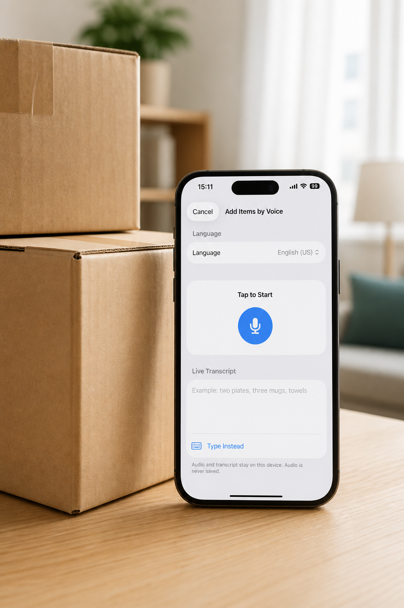
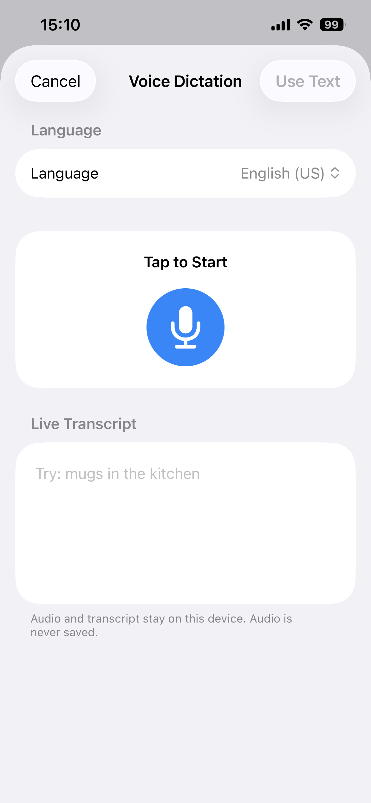

Keep packing while you record
How to add items to moving boxes by voice
Say the items and quantities you are putting into a box, review the draft, and save the entries together instead of stopping to type each one.
Moving Boxes Organizer · App Store ID 6766885651

The packing problem
Typing every item can break your packing rhythm.
When a box is open and your hands are busy, entering one item at a time can turn a quick inventory into a separate paperwork task. A useful voice flow should still leave you in control of the final list.
- Several small items may belong to one box, but entering them one by one slows the next packing step.
- Quantities are easy to forget when you rely on memory after the box is sealed.
- Speech recognition should create a draft, not silently save words you have not checked.
What to do
Speak once. Check the list. Save the box.
- Open the box and choose Add by Voice.
Start from an empty box or the box actions menu when you are ready to record several items.
- Say the items and quantities.
Use a natural list such as “four plates, two mugs, one coffee grinder.” The flow can split the spoken list into separate item drafts.
- Review the editable draft.
Correct names and quantities, then add a category, note, Fragile flag, or Valuable flag if the box needs more detail.
- Save the items together.
After confirmation, the items become part of the box record and can be found later through search.
How Moving Boxes Organizer helps
A reviewed voice draft becomes a searchable box record.

Privacy and fit
The recording stays on the device, and the draft stays yours to check.
Voice entry uses on-device speech recognition and does not save the original audio. The basic flow does not require Apple Intelligence. Availability depends on the selected language and the speech resources available on the device.
- Moving boxes
- Storage bins
- Garage shelves
- Closets
- Seasonal items
- Pro feature
FAQ
Questions about voice entry.
Can I say several items at once?
Yes. Say several item names and quantities, review the editable draft, and save the items together in a box.
Are voice recordings uploaded or saved?
The voice flow uses on-device speech recognition and does not save the original recording.
Can I check the items before saving them?
Yes. The draft stays editable so you can correct names, quantities, categories, notes, and item flags before saving.
Which languages are supported?
The voice flow supports English, German, Spanish, French, Japanese, Korean, and Traditional Chinese when the device can process the selected language on device.
Is voice entry included in Pro?
Voice entry is a Pro feature. Regional availability and purchase details are shown on the App Store product page.
Keep packing. Keep the record.
Moving Boxes Organizer · App Store ID 6766885651